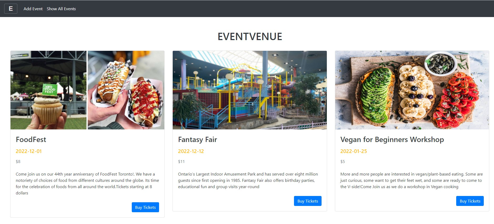
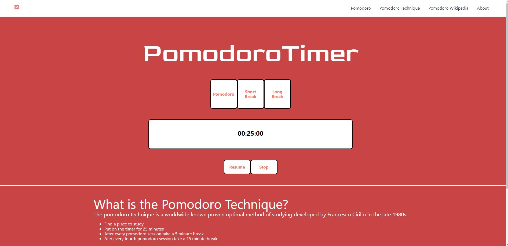

Created a full-stack application website that enables you to add
events and buy tickets to events. Designed the user interface using
ReactJS, HTML/CSS, and bootstrap. Developed backend using Spring Boot
to create a REST API and Integrated UI with the backend. Created
automated testing to make sure every feature developed is working as
designed. Automated the testing with CI/CD to run tests on every Pull
request to avoid bugs. I Used PostgreSQL Docker Container to run a
database for local development and AWS ECR for cloud deployments

Developed an app that implements the pomodoro timer study method.Used
HTML/CSS, JavaScript, and JavaScript library (ReactJS) to design UI.
Implemented through using states and the “setInterval” method to set
the timer to its designated time Installed the “moment” tool in the
JavaScript library (ReactJS) to help display time with ease.